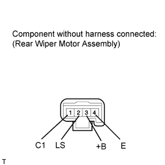

REAR WIPER MOTOR > INSPECTION |
| 1. INSPECT REAR WIPER MOTOR ASSEMBLY |
 |
Check the wiper operation.
Apply battery voltage to the rear wiper motor and check the speed of the rear wiper motor.
| Measurement Condition | Specified Condition |
| Battery positive (+) → Terminal 3 (+B) Battery negative (-) → Terminal 2 (LS) and Terminal 4 (E) | Motor operates |
Check the INT operation.
Apply battery voltage to the rear wiper motor and check the speed of the rear wiper motor.
| Measurement Condition | Specified Condition |
| Battery positive (+) → Terminal 3 (+B) Battery negative (-) → Terminal 1 (C1) and Terminal 4 (E) | Motor operates |
Automatic Stop Position Operation Check
Connect the battery positive (+) lead to terminal 3 (+B), and the negative (-) lead to terminal 2 (LS) and terminal 4 (E). With the motor rotating, disconnect terminal 2 (LS) to stop the wiper motor operation at any position other than the matchmark.
Check that the motor stops automatically at the matchmark.